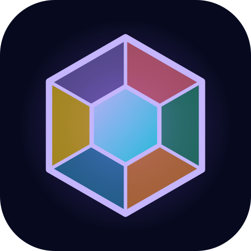
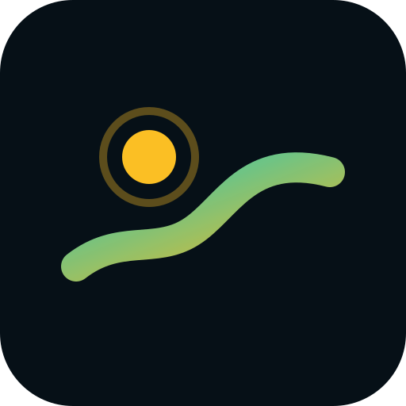
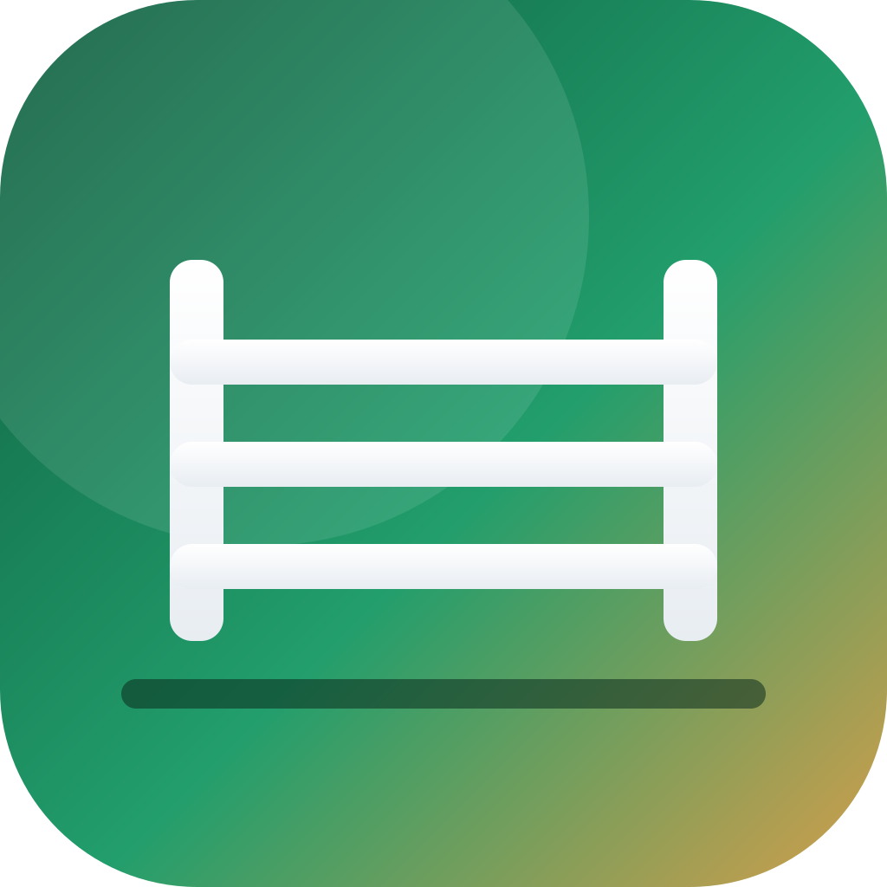

Des applications mobiles simples : une idée, quelques écrans, et ça marche.
Conçues et développées en solo par David Turbert. La plupart s’essaient directement dans le navigateur, sans rien installer.

Un questionnaire : 24 questions, un portrait en six facettes, et un duo que vous comparez avec quelqu’un par simple lien.
Un jeu de collection : photographiez les grands panneaux-lettres des villes et grimpez au classement.

Un jeu de marche : la carte est couverte de brume, et elle ne se lève que là où vous marchez vraiment.
Un juge de pétanque : photographiez la mène et voyez tout de suite quelle boule est la plus proche du cochonnet.

Un outil de chef de piste : dessinez vos parcours de saut d’obstacles, avec distances, foulées et temps accordé.
Un lecteur IPTV : regardez vos propres playlists M3U ou Xtream, guide des programmes compris. Aucune chaîne fournie.